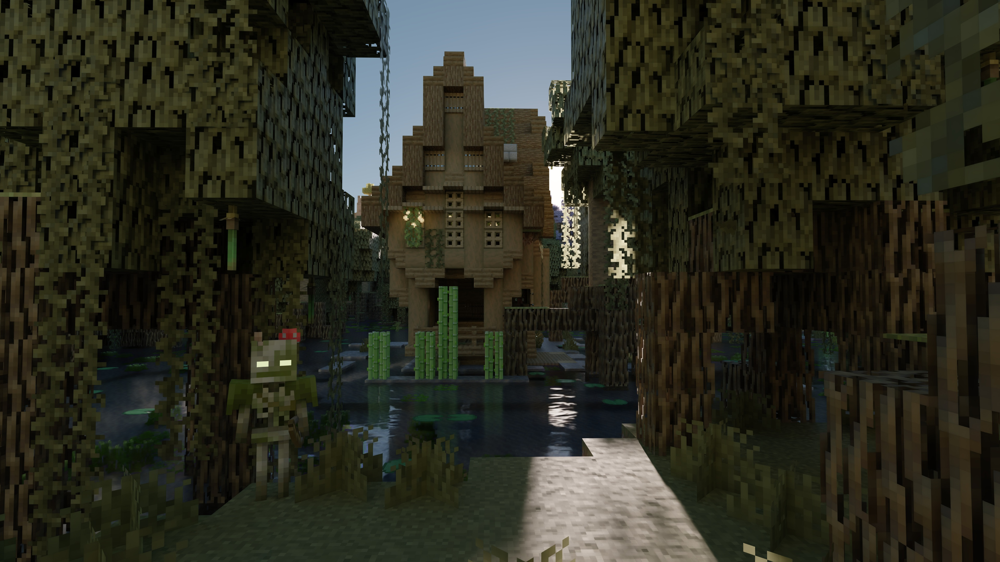
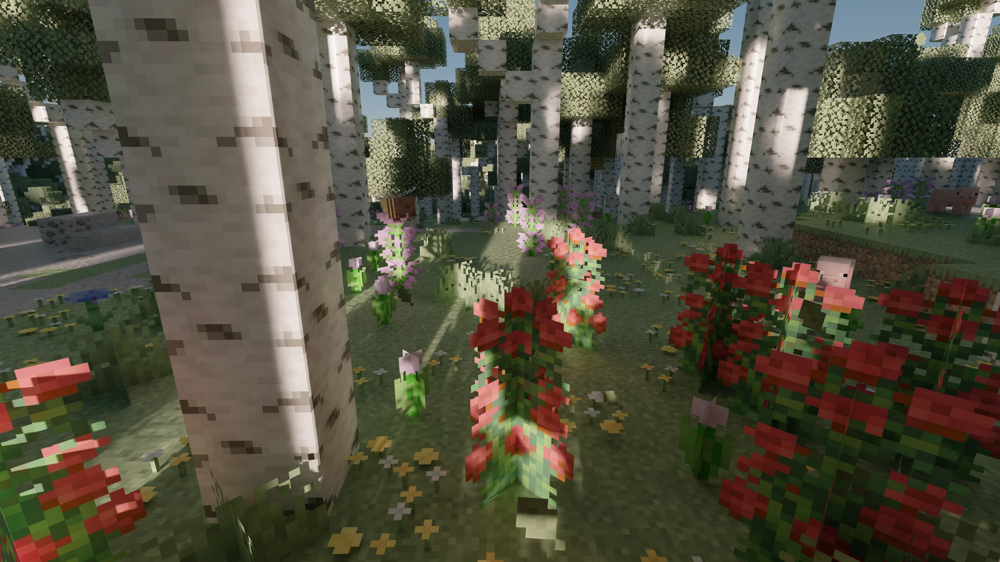
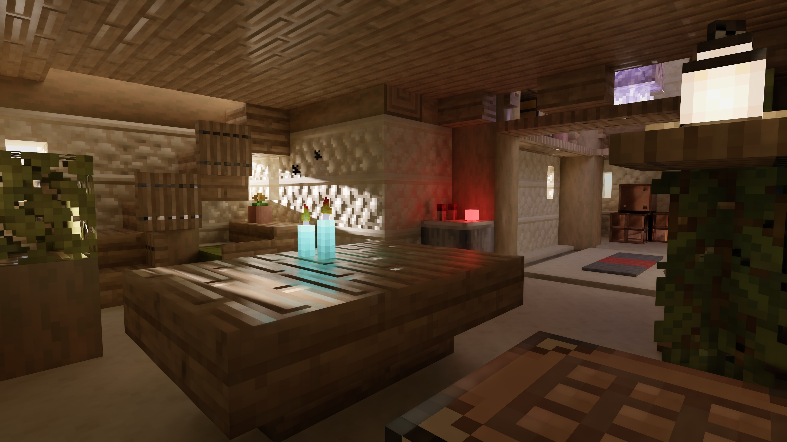
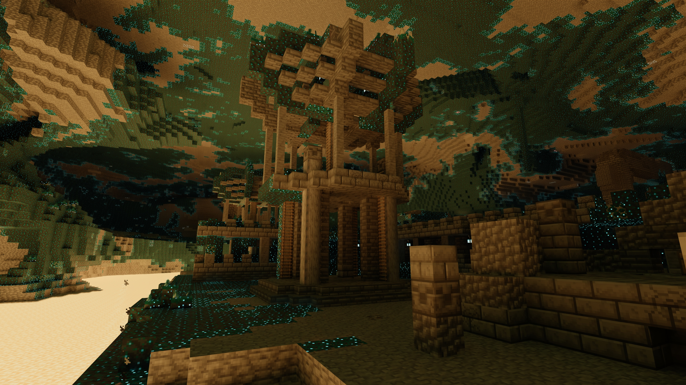

Path-traced worlds
Hardware ray tracing brings natural bounce light, reflections, and shadows to the places you already know.
A renderer for Minecraft 26.2
Caustica brings hardware ray tracing to Minecraft's Vulkan backend, so light, reflections, and atmosphere can behave like they do in the real world.
Early software. Built in the open.

The idea
Caustica is an experimental renderer built for people who want to linger in their worlds. It replaces the vanilla world view with a physically informed, hardware-accelerated path while keeping Minecraft's familiar UI and gameplay intact.
What changes
From the glint on water to the soft edge of a shadow, the renderer makes room for the details that give a place its character.
Hardware ray tracing brings natural bounce light, reflections, and shadows to the places you already know.
LabPBR-style materials, dynamic entities, and opacity micro-maps help every surface tell the right story.
DLSS Ray Reconstruction, Frame Generation, HDR output, and shader execution reordering keep the scene moving.
From the field



Begin here
Caustica is client-side and experimental. Install it through Fabric, launch with the Vulkan backend, and open Video Settings to make it yours.
Install Fabric Loader 26.2 and Fabric API.
Place the Caustica jar in your mods folder.
Launch with Vulkan and explore your settings.